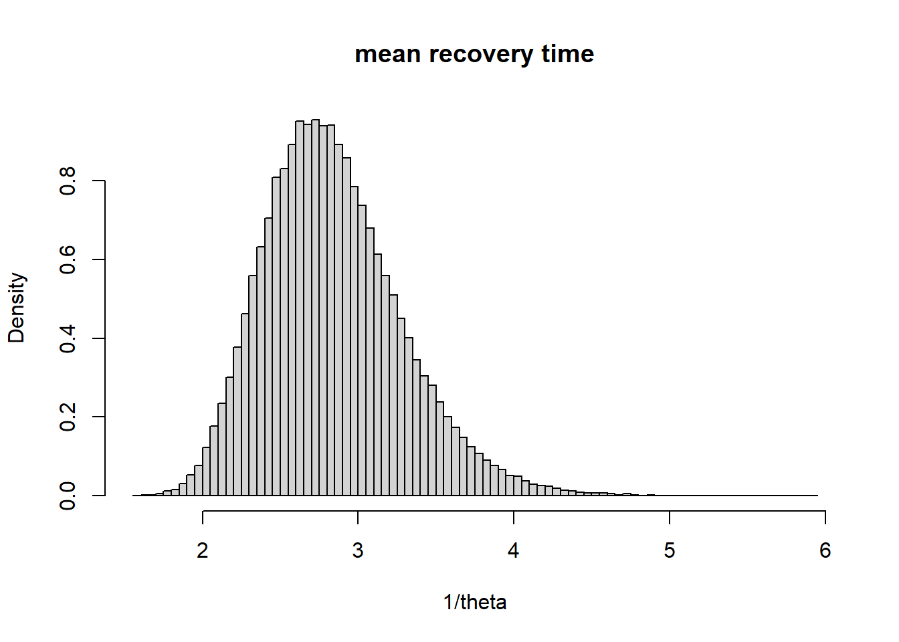

删失数据是我们观察到的一部分数据，贝叶斯统计学把它当作missing缺失数据来处理，贝叶斯的方法是想办法把缺失的数据填补回来 gibbs sampling是这么做的，有了y我们可以抽θ，有了θ我们可以抽\(Exp(θ)I(y_i > 6)\),重复上面的两个步骤，我们就可以抽出一大推θ和missing， 所以贝叶斯统计不但可以把θ估计出来，还可以把missing估计出来 未知参数是θ，给θ一个共轭先验 为了简便，假设θ的先验是gamma分布: \[θ ~ Ga(a, b)\] 这样可以很快求出后验分布: \[θ|y ~ Ga(a + n, b + n\bar{y})\]
使用共轭gamma分布
# 使用rexp函数创造服从指数分布的生存数据
set.seed(20210716)
dat <- data.frame(id = 1:50, time.to.recovery = rexp(50, rate = .4))
# 创造删失数据
dat$miss <- dat$time.to.recovery > 6
dat$y <- ifelse(dat$miss, 6, dat$time.to.recovery)y <- dat$y
n <- length(y)
n.miss <- sum(dat$miss)
# hyperparameters
a <- 0.01
b <- 0.01
n.reps <- 100000
theta <- numeric(n.reps)
for (i in 1:n.reps) {
theta[i] <- rgamma(1, a+n, b+sum(y))
y[dat$miss] <- 6 + rexp(n.miss, theta[i])
}# mean survival time
hist(1/theta, 100, freq = F, main = "mean recovery time")
# mean survival time 95% Credible interval 可信区间
quantile(1/theta, c(0.025, 0.975))## 2.5% 97.5%
## 2.100323 3.828482mean(theta)## [1] 0.3606895sum(!dat$miss) / sum(dat$time.to.recovery)## [1] 0.3187496贝叶斯方法可以求出分布，missing， 上面的例子是右删失，区间删失同样可以求出来
简单起见，假设协变量\(x_i\)只有一个，是一个binary treatment indicator